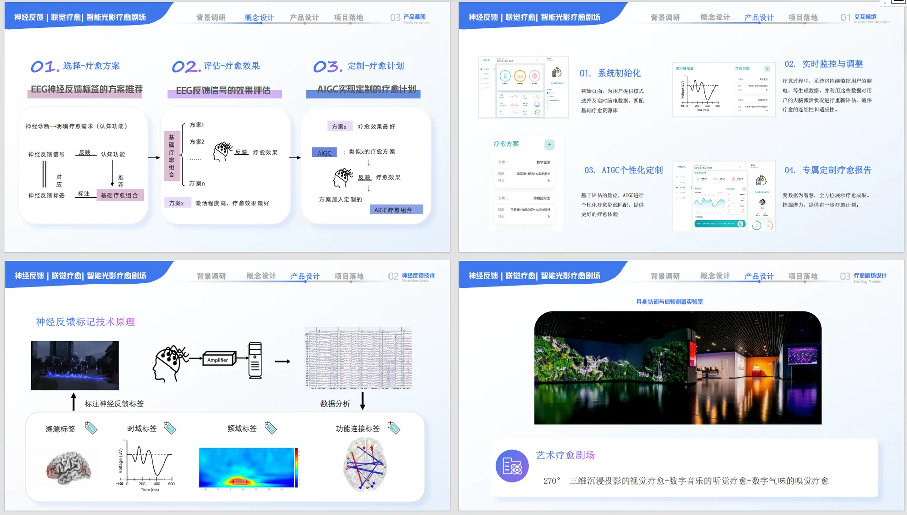

NeuroArt
疗愈 AI 智能剧场
01项目概述
这是一个"硬件 + 软件"结合的产品设计实践：基于 EEG 脑电信号反馈的孤独症联觉疗愈 AI 智能剧场，2025.11 – 2025.12。
硬件侧由 EEG 监测设备、音乐播放及气味扩散系统组成；软件侧由 AI 算法与用户管理模块组成。我在项目中负责软件侧的产品设计工作。
02负责的部分
- 产品规划：负责软件平台与用户界面的产品设计，规划疗愈记录、EEG 神经反馈、个人信息等核心功能模块
- 跨端协同：设计硬件（EEG 监测设备、音乐播放及气味扩散系统）与软件（AI 算法、用户管理模块）的联动架构，输出功能需求文档
03设计稿
